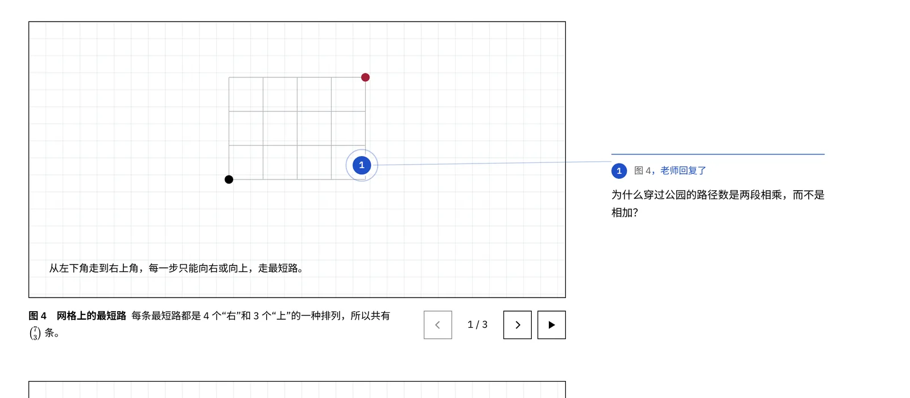
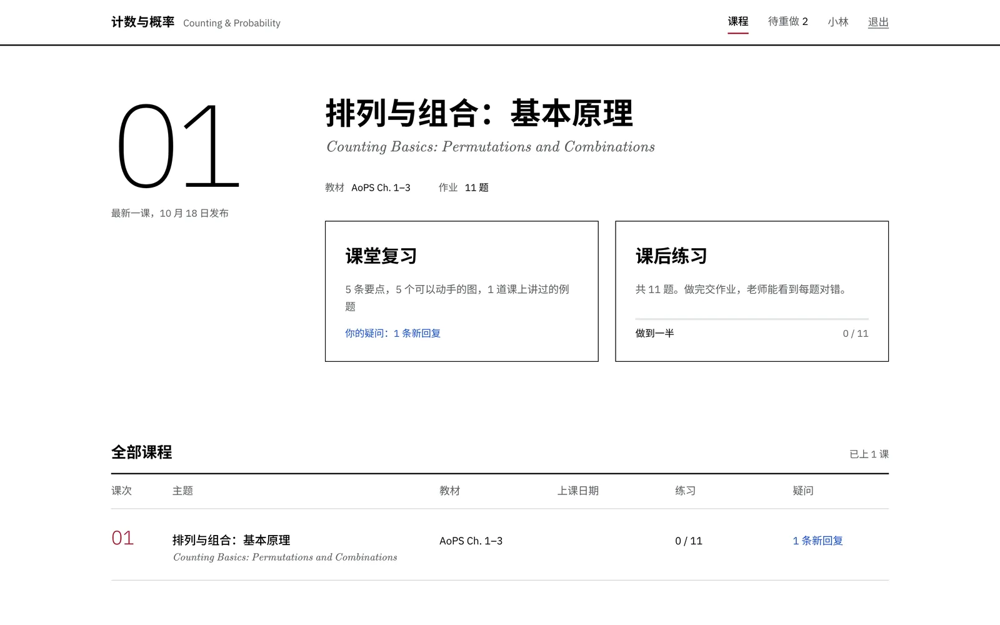
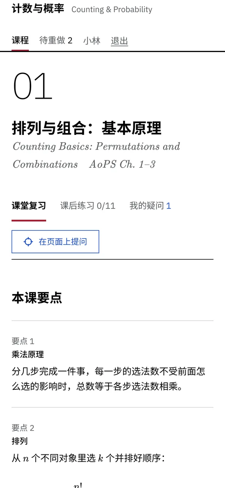
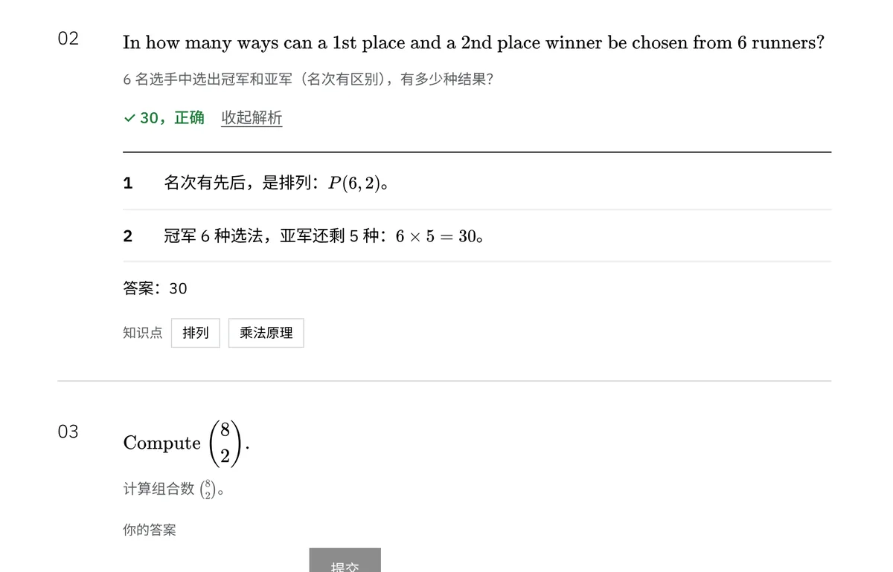
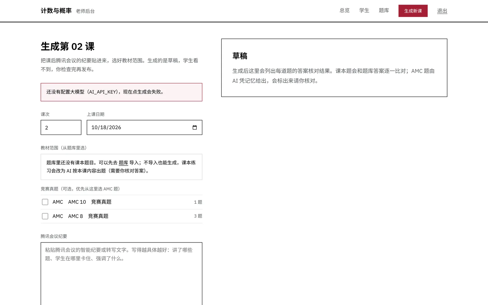

一对一竞赛课的课后网站，学生在哪儿卡住就在哪儿提问
每节课后发布复习和作业。课本题即时判分，答对后看分步解析；学生在页面任意位置点一下就能留下疑问，老师在微信收到通知，在原处回复。课堂纪要贴进后台，AI 起草下一课。
- 运行在Cloudflare Workers + D1，免费额度够一个班用
- 许可MIT，代码可以随意使用和修改
- 状态作者自己的课正在用，功能还在调整
在题目上任意位置点一下
02
How many shortest paths go from the lower-left corner to the upper-right corner of a 4 × 3 grid?
4 × 3 的网格，从左下角走到右上角，最短路有几条？
- 1每条最短路都是 4 个“右”和 3 个“上”的一种排列。
- 27 步里选 3 步向上：C(7, 3) = 35。
疑问会出现在这里，宽屏时显示在页边，用引线连到图钉。
一节课的流程
老师只做两件事：下课后贴纪要，检查草稿后发布。剩下的交给网站。
-
老师，下课后
贴纪要，生成草稿
把腾讯会议的智能纪要贴进后台，勾选这节课讲到的教材章节。AI 同时起草课堂复习和课后练习，课本题逐题和题库答案比对，对不上的标红。
-
学生，课后
复习、做题、提问
复习页有可以一步步操作的计数动画。作业答案只在服务器上，答错给提示，答对或试两次后解锁解析。哪里没看懂，就在那里点一下写一句话。
-
老师，随时
收到通知，原处回复
疑问和交作业结果推送到微信，短时间内的多条会合并。点进去直接跳到图钉所在位置回复，学生看到图钉变成实心。
界面
白底、黑字、MIT 红，批注用蓝色。英文题干用和 AMC 试卷一样的 LaTeX 字体。





技术栈
一个 Worker 同时提供接口和前端页面，数据库第一次访问时自动建表。
- 运行环境
- Cloudflare Workers，静态资源用 Workers Assets，数据存在 D1（SQLite）
- 后端
- Hono 路由，zod 校验所有输入和 AI 输出，HMAC 签名的会话 cookie
- 前端
- React 19，KaTeX 渲染公式，9 种参数化计数动画（数字由组件计算，AI 只填参数）
- AI
- 任何 OpenAI 兼容接口（默认 DeepSeek，也可用通义千问、OpenRouter）或 Anthropic；输出不合格式会自动修一次
- 通知
- WxPusher 极简推送或 Server酱，推到微信
- 登录
- 老师用密码；学生用专属口令或登录链接，免注册
部署自己的一份
大约 15 分钟，需要一个 Cloudflare 账号。详细说明见仓库里的 README。
- Fork 仓库，在 Cloudflare 的 Workers 和 Pages 里选“导入存储库”，构建命令
npm install && npm run build，部署命令npx wrangler deploy。数据库会自动创建。 - 设置后台密码：在 Worker 的“变量和机密”里加
ADMIN_PASSWORD（类型选密钥）。要用 AI 生成就再加AI_API_KEY，要微信通知就加WXPUSHER_SPT。 - 导入题库：把课本习题整理成 JSON，在后台“题库”页粘贴导入。AI 出课本练习时只从题库里选题，并用题库答案核对。
- 添加学生，把生成的登录链接发给他们。之后每节课后贴纪要、检查、发布。
关于课本内容
仓库只包含代码和一节示例课。示例课的题目出自 AoPS《Introduction to Counting & Probability》和 AMC 真题，版权归原出版方所有。你的题库请自行整理，部署后保持口令登录，不要公开课本内容。
站在这些项目上
- Cloudflare 官方模板：Worker + 静态资源 + D1 的工程结构
- Hono、React、KaTeX、zod、esbuild
- IBM Plex Sans：界面字体（OFL）
- SitePing：图钉定位方法